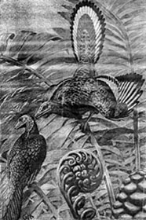
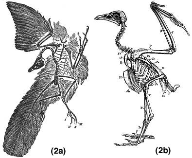

A maioria dos criacionistas literalistas argumenta que não existem formas transicionais (por exemplo, Morris 1967, Gish 1979, 1985, 1995). Cracraft (1983) sugere que este argumento,
pode ser bem o exemplo paradigmático que caracteriza toda a controvérsia criação-evolução, pois ilustra como os criacionistas tomaram uma questão científica extremamente complexa, simplificaram o assunto até o ponto de distorção e, em seguida, promoveram a alegação criacionista de forma francamente falsa de que o registro fóssil apoia a visão de mundo criacionista. De fato, a partir da maneira como os criacionistas discutem essa questão, pode-se concluir apenas que ou os criacionistas adotaram conscientemente a tática de distorção direta ou são tão abismalmente ignorantes dos argumentos científicos e dos dados que suas aparentes distorções são apenas acidentais, não intencionais. (p. 178)
Cracraft também discute a metodologia empregada pelos criacionistas sobre este tópico.
Os criacionistas adotaram três linhas de argumentação contra a existência de formas transicionais: (1) eles citam liberalmente diversos paleontólogos quanto à escassez de formas transicionais; (2) eles definem o conceito de "forma transicional" de uma maneira que é distintamente diferente do uso do termo pelos evolucionistas; e (3) eles simplesmente negam a existência de táxons intermediários, enquanto ignoram a vasta literatura científica que se opõe à sua posição. (p. 179).
Em discussões sobre a existência de formas transicionais no registro fóssil, nenhum fóssil causou mais "penas a voarem" do que o Archaeopteryx, devido ao seu lugar de destaque como um exemplo clássico de forma transicional - em termos evolutivos, uma forma que exibe caracteres compartilhados com um grupo e apenas com esse grupo, enquanto também exibe outros caracteres compartilhados com outro grupo e apenas com esse grupo (por exemplo, Kitcher 1982), ou seja, um intermediário morfológico. O Dr. Duane Gish do Instituto de Pesquisa Criacionista é provavelmente um dos mais vocais em protestar contra o reconhecimento do Archaeopteryx como uma forma transicional (por exemplo, Gish 1979, 1985, 1995). Houve vários comentários sobre passagens do livro de 1978 do Dr. Gish Evolução? Os Fósseis Dizem Não! (por exemplo, Kitcher 1982; Cracraft 1983; Raup 1983; Halstead 1984; Strahler 1987; Blackburn 1995), mas relativamente poucos comentários sobre o livro de 1985 do Dr. Gish Evolução: O Desafio do Registro Fóssil. Este artigo examina uma pequena parte do livro de 1985 - aquela referente ao Archaeopteryx - à luz dos comentários de Cracraft.
O Dr. Gish publicou recentemente (1995) uma versão atualizada de seu livro de 1985, chamado Evolução: Os fósseis ainda dizem NÃO!. Uma análise do tratamento de Archaeopteryx naquele livro está em andamento. No entanto, a meia-vida bem conhecida do material criacionista literalista, muito depois de ter sido superado, significa que isso pode ainda representar um recurso valioso para pessoas que respondem a afirmações criacionistas literais sobre Archaeopteryx.
Algum material de Evolution: Challenge of the Fossil Record tornou-se obsoleto devido a novos dados acumulados nos 10 anos desde a primeira publicação do livro. No entanto...
"Em referência a Archaeopteryx, Ichthyornis e Hesperornis, Beddard declarou: 'Com tanta ênfase todos esses seres eram aves que a origem real das Aves é apenas sugerida na estrutura desses notáveis restos'" (Beddard 1898, p. 160)." (p. 110)
Apesar do fato de que Beddard estava escrevendo em 1898, quando apenas dois espécimes de Archaeopteryx eram conhecidos, o critério de Beddard (1898, p. 6) para identificar aves é instrutivo. "Uma ave pode ser reconhecida pelas suas penas; para definir uma ave, basta referir-se à sua cobertura de penas. Nenhum outro animal possui estruturas comparáveis a uma pena bem desenvolvida." Note, no entanto, que Beddard não tinha dúvida sobre a unicidade de Archaeopteryx, listando cerca de 8 caracteres nos quais "...Archaeopteryx diferia de todas as aves conhecidas." (p. 532). É interessante notar aqui que a recente descoberta de Sinosauropteryx - um dinossauro na China que parece preservar penas - sugere que, pelo menos no que diz respeito às espécies fósseis, as penas podem não ser um bom caráter definidor para as aves
Estes caracteres são compartilhados com répteis e tornaram-se mais refinados com a descoberta de espécimes adicionais, especialmente o espécime de Eichstätt, descrito em 1974. Tais foram as diferenças entre Archaeopteryx e todas as outras aves que Beddard (1898, p. 159) foi levado a escrever, "[n]ão há dúvida, na minha opinião, de que as aves devem ser principalmente divididas em duas grandes divisões, a saber, Saururae e Ornithurae, a primeira contém Archaeopteryx e possivelmente Laopteryx, a segunda o resto das aves, tanto as vivas quanto as extintas." Claramente, embora Beddard considerasse Archaeopteryx uma ave porque possuía penas, ele considerava que era suficientemente diferente de todas as outras aves para merecer sua própria divisão (Laopteryx foi posteriormente reclassificado como um pterossauro por Ostrom em 1986).
"Durante os oitenta e cinco anos desde a publicação do livro de Beddard, não apareceu nenhum melhor candidato como intermediário entre répteis e aves do que Archaeopteryx. Não foi descoberto nenhum único intermediário com asas parciais ou penas parciais." (p. 110)
Este é um exemplo de definir uma forma transicional de tal maneira a eliminar a possibilidade de nunca encontrá-la (Cracraft 1983), já que tais intermediários "parciais" não seriam esperados. A evolução de características não ocorre ao mesmo tempo nem à mesma taxa. Alguns caracteres evoluem rapidamente, outros mais lentamente, de modo que intermediários suaves e bem definidos "parciais" não serão encontrados. Durante os últimos oitenta e cinco anos, formas mosaico intermediárias entre Archaeopteryx e aves, e entre Archaeopteryx e répteis, foram encontradas. Por exemplo, Mononychus (Altangerel et al. 1993), "fornece um conjunto de caracteres de grande importância para a compreensão das aves primitivas; este conjunto pode ser interpretado de forma inequívoca e indica uma posição transicional entre Archaeopteryx e todas as outras aves." (Milner 1993, p. 589). Além disso, a descoberta de Sinosauropteryx sugeriu que as penas podem ter surgido primeiro e que os dinossauros emplumados evoluíram para as aves. Assim, um intermediário entre dinossauros e aves já possuiria penas.
"Nem um único intermediário com asas em parte ou penas em parte foi descoberto. Talvez seja por isso que, com o passar do tempo, Archaeopteryx, aos olhos de alguns evolucionistas, tornou-se cada vez mais 'semelhante a répteis'! Em contraste com a avaliação de Beddard sobre Archaeopteryx, alguns evolucionistas hoje não apenas afirmam que este pássaro está inegavelmente ligado aos répteis, mas que, se impressões claras de penas não tivessem sido encontradas, Archaeopteryx teria sido classificado como um réptil. Esta é, para dizer o mínimo, uma exageração grosseira." (p. 110-111)
A "exagero grosseiro" é de Dr. Gish, por vários motivos.
Na ligação aos répteis, Beddard (1898, p. 154) afirma, "a crença geral é na origem dos pássaros a partir de algum tronco de répteis, mas não há um acordo absoluto quanto a precisamente qual grupo de répteis os pássaros são mais próximos. As pesquisas de Marsh e Huxley, além das de Cope, Seeley, Hulke e outros, levaram a uma aceitação geral de uma afinidade mais próxima com os dinossauros do que com qualquer outro grupo de répteis." Também, "[i]t follows, therefore, that in sketching, at any rate, the main outlines of our scheme attention must be paid only, or chiefly, to those characters which birds have inherited from their reptilian ancestors." (Beddard 1898, p. 159). É claro que, na visão de Beddard, Archaeopteryx estava ligado aos répteis e, portanto, não há nenhum "contraste" entre suas visões e a visão moderna.
O caráter reptiliano de Archaeopteryx tem sido notado há muito tempo. Em 1867, Huxley descreveu os pássaros como répteis altamente modificados (Newton 1884). De fato, o próprio autor e o livro que o Dr. Gish cita (Beddard 1898, p. 164) afirmaram: "[n]ão há dúvida de que o Archaeopteryx, embora tenha divergido muito do estoque ancestral, conservou mais características de réptil do que qualquer outra forma conhecida." Jordan & Kellogg (1916, p. 301) afirmaram que: "Uma comparação dos répteis antigos com o Archaeopteryx de cauda longa e outros pássaros com dentes mostra que os pássaros e os répteis eram uma vez quase indistinguíveis, embora agora sejam tão diferentes. Os pássaros têm penas, os répteis não; mas não há quase nenhuma outra diferença permanente." "Podemos agora parar de falar sobre 'o elo perdido' entre pássaros e répteis. O Archaeornis [o espécime de Berlim de Archaeopteryx] é tal elo que podemos chamá-lo de réptil de sangue quente disfarçado de pássaro." (Heilmann 1926, p.32). "Archaeopteryx, por outro lado, é quase cem por cento reptiliano, e se não fosse pelas penas, ninguém hesitaria em considerá-lo puramente reptiliano ou até mesmo dinossáurico." (Lowe 1935, p. 408). "Na minha opinião, não há nada no esqueleto inteiro que possa ser apontado como definitivamente aviano em oposição ao dinossáurico." (Lowe 1935, p. 409). "[A] proximidade entre répteis e pássaros é geralmente aceita e é uma questão de conhecimento comum e história." (Lowe 1935, p. 399). "Archaeopteryx e Archaeornis, portanto, embora indubitavelmente pássaros, como testemunhado por suas penas de voo bem desenvolvidas e típicas, seus membros e, de fato, seus esqueletos inteiros, proclamam sua ancestralidade reptiliana de forma inequívoca." (Tucker 1938, p. 322-323).
As citações acima (veja também a citação de Lull abaixo) mostram que as alegações do Dr. Gish são falsas. Nem as afinidades reptilianas de Archaeopteryx, nem as afirmações de que sem penas Archaeopteryx seria classificado como um réptil, são construções recentes.
"A partir da reconstrução mostrada na Figura 11, é óbvio que Archaeopteryx era muito parecido com um pássaro, equipado com um crânio semelhante ao de um pássaro, pés para pernoitar, asas, penas e uma fúrcula, ou osso do desejo." (p. 112).
 |
A figura (reimpressa aqui como Fig. 1) é retirada de Lull (1940, pl. XIV). No entanto, a legenda da placa XIV cita Heilmann como a fonte. A Figura 11 do Dr. Gish é, na verdade, uma pintura, de Heilmann, da página de rosto do seu livro de 1926, The Origin of Birds. Lull (1940, p. 328) descreve a figura, "[t]estes primeiros pássaros, dos quais apenas dois ou três espécimes foram recuperados, são conhecidos como Archaeopteryx e Archaeornis (veja Fig. 80 e Pl. XIV) são tão semelhantes a répteis que, se não fossem as penas preservadas, é duvidoso que se pudesse prová-los seguramente como pássaros." Palavras proféticas, pois em 1940 um espécime de Archaeopteryx estava no Museu de Haia, mal identificado como um pterossauro, e mais recentemente, o espécime de Solnhofen foi reconhecido como sendo um Archaeopteryx após ter sido originalmente identificado como o pequeno dinossauro Compsognathus.
O Dr. Gish não apenas ignora a proclamação clara de Lull sobre a natureza reptiliana de Archaeopteryx, mas usa uma pintura de 70 anos de Archaeopteryx, desenhada como um pássaro, para mostrar que Archaeopteryx era "muito um pássaro". Presumivelmente, pela mesma lógica, "Barney" prova que os dinossauros eram roxos!
A pintura não mostra um "crânio semelhante a um pássaro"; os pés estão obscurecidos pela folhagem; e a furcula é uma estrutura esquelética interna, tornando sua exibição na pintura impossível. Além disso, na análise detalhada de Heilmann (1926), Archaeopteryx foi comparado com dinossauros maniraptóros apenas para que o vínculo fosse rejeitado, pois se acreditava que os dinossauros maniraptóros careciam de clavículas (estas são consideradas o precursor da furcula aviar ou do osso do peito) (Ostrom 1976). Mais recentemente, não apenas clavículas foram encontradas em dinossauros como Velociraptor, Euparkeria e Ornithosuchus (Bryant & Russell 1993), mas, de fato, furculas também foram encontradas em dinossauros como Oviraptor e Ingenia (Barsbold 1983, Barsbold et al. 1990, Bryant & Russell 1993). Portanto, a posse de uma furcula não é mais um caráter exclusivo dos pássaros.
As asas de Archaeopteryx são estruturalmente dissimilares às das aves modernas; os ossos do pulso e dos dedos não estão fundidos (como na maioria dos dinossauros terópodes, mas ao contrário das aves e de alguns dinossauros cretáceos, nos quais os ossos estão fundidos); a articulação do pulso também é muito menos desenvolvida do que nas aves modernas; os dedos mantêm as garras na fase adulta (como em outros dinossauros terópodes, mas ao contrário das aves) e a articulação do ombro é mais semelhante à do dinossauro terópode Deinonychus e parece intermediária entre os dinossauros terópodes e as aves (Jenkins 1993). Não apenas a ilustração não documenta alguns dos caracteres alegados pelo Dr. Gish, mas a ilustração é patentemente inadequada como ilustração científica - já que nunca foi destinada a sê-lo. Uma figura muito mais precisa para ilustrar a verdadeira natureza de Archaeopteryx é mostrada na Figura 2.
|
 |
Esta comparação entre Archaeopteryx (a) (Parker & Haswell 1940) e um pássaro moderno (b) (Claus 1889) mostra a estrutura esquelética em detalhes e destaca as diferenças. Esta figura mostra claramente que a asa e o crânio de Archaeopteryx diferem dos de pássaros modernos.
"Já foi alegado que o crânio de Archaeopteryx era semelhante ao de répteis em vez de semelhante ao de aves. Recentemente, no entanto, o crânio do espécime de 'Londres' foi removido de sua laje de calcário por Whetstone (1983). Estudos mostraram que o crânio é muito mais largo e mais semelhante ao de aves do que se pensava anteriormente (Whybrow 1982)." (p. 112-113)
Aparece haver alguma confusão aqui, uma vez que o crânio do espécime de Londres foi preparado por P.G. Whybrow em 1980 e os problemas encontrados, bem como as ferramentas e métodos de conservação utilizados durante a preparação, foram detalhados em um artigo técnico (Whybrow 1982). Whetstone (1983) descreveu e interpretou o crânio recém-exposto, não sua remoção. Parece que Benton (1983) (a referência citada pelo Dr. Gish em sua próxima frase – veja abaixo) atribuiu incorretamente a descrição do crânio a Whybrow. Whybrow, na verdade, não faz nenhum comentário sobre a natureza semelhante à de pássaro do crânio. O erro parece ter sido repetido pelo Dr. Gish, que também cita incorretamente Whybrow como a fonte dessa afirmação. Ao citar Whetstone e Whybrow, o Dr. Gish dá a impressão de que a literatura primária havia sido consultada, quando, na verdade, parece que não o foi. A comparação "semelhante à de pássaro" vem de Whetstone: "[o] crânio é muito mais largo e mais semelhante ao de um pássaro do que anteriormente interpretado por de Beer (1954), apoiando as estimativas do tamanho do cérebro por Jerison (1973)" (Whetstone 1983, p. 439).
A citação original é um pouco diferente de "...o crânio é muito mais largo e mais parecido com o de um pássaro do que se pensava anteriormente", já que Whetstone compara o crânio com a interpretação de de Beer e indicou que um tamanho de crânio maior já havia sido sugerido por Jerison em 1973. Algumas esclarecimentos podem ser necessários neste ponto. Em sua descrição de Archaeopteryx, em 1954, de Beer pensou que o crânio estava exposto ao longo da linha média, sugerindo que metade do neurocrânio estava exposta e metade enterrada na matriz. Isso permitiu a de Beer fazer uma estimativa do tamanho do cérebro. No entanto, como Jerison (1973) apontou, a interpretação de de Beer da linha média estava errada, e apenas aproximadamente um terço do neurocrânio estava exposto. Portanto, a reconstrução de de Beer subestimou o tamanho do cérebro. A escavação do crânio por Whybrow confirmou a interpretação de Jerison. Um crânio aumentado em relação ao resto do crânio é uma característica dos pássaros; nos répteis, o crânio é geralmente menor. No entanto, um cranídio aumentado não é único aos pássaros. Vários dinossauros também têm crânios aumentados, incluindo Saurornithoides (Hopson 1980), Stenonychosaurus (Currie 1985) e Troodon (Currie & Zhao 1993). Em alguns casos, o crânio do dinossauro é mais parecido com o de um pássaro do que o crânio de Archaeopteryx.
Whetstone descreve, de fato, o crânio (ao contrário do crânio) de Archaeopteryx como "tipicamente aviano" (p.449), no entanto, ele também descreve características do crânio encontradas em Archaeopteryx e não em aves.
"Isso levou Benton a afirmar que 'Os detalhes do crânio e ossos associados na parte traseira do crânio parecem sugerir que Archaeopteryx não é a ave ancestral ... (Benton 1983).' Benton pode apenas sugerir que Archaeopteryx pode ser um ramo colateral do tronco aviano inicial." (p. 112-113).
Para reconstruir a citação original: "Os detalhes do crânio e dos ossos associados na parte traseira do crânio parecem sugerir que Archaeopteryx não é a ave ancestral, mas um ramo colateral do tronco aviano inicial." (Benton 1983, p. 99). No entanto, o fato de Archaeopteryx ser ou não a ave ancestral não diminui o fato de que se trata de uma forma transicional. Transicional porque possui características em comum com répteis e também características em comum com aves. Em outras palavras, possui um mosaico de caracteres, alguns obviamente reptilianos (como a longa cauda óssea com muitas vértebras livres e o sacro com 6 vértebras; alguns transicionais, como a cintura pélvica e o comprimento dos braços; e alguns semelhantes a aves, como as penas e um grande dedo opositor). Na verdade, um estudo recente do novo, sétimo, espécime de Archaeopteryx por Elzanowski & Wellnhofer (1996) destacou essa natureza mosaica ao documentar que o crânio possui características avianas (palatino + maxilar, processo cianoide em forma de gancho com uma asa pterigóide longa) e terópodes (vomer único e processo jugal em forma de gancho do ectopterigóide). A natureza transicional de Archaeopteryx deve-se à sua morfologia, não à sua taxonomia.
"John Ostrom tem sido, ultimamente, o principal defensor da ancestralidade dinossaúrica para o Archaeopteryx. No entanto, Tarsitano e Hecht criticaram a hipótese de Ostrom, alegando, entre outras coisas, que ele distorceu as homologias dos membros do Archaeopteryx e dos dinossauros terópodes (Tarsitano & Hecht 1980). (p. 113).
Isso parece ter sido retirado da referência de Benton (1983) mencionada acima, sugerindo que Benton, e não Tarsitano & Hecht 1980, foi a fonte primária do Dr. Gish. Se este foi o caso, o Dr. Gish omitiu a próxima linha. A declaração completa de Benton (compare com a declaração do Dr. Gish acima) lembra: "Finalmente, Tarsitano e Hecht (1980) criticaram vários aspectos da hipótese de Ostrom, e eles consideraram que ele havia mal interpretado as homologias dos membros de Archaeopteryx e terópodes. Thulborn & Hamley (1982), revisando todas as críticas [de Tarsitano e Hecht e de Martin et al. 1980 - veja abaixo], no entanto, concluíram que elas são infundadas (interpretações incorretas, evidências inconclusivas, persistência de caracteres primitivos), e que elas não "enfraquecem seriamente a hipótese de que Archaeopteryx está estreitamente relacionado a dinossauros terópodes"." (p. 99-100). O Dr. Gish parece ter ignorado comentários dissidentes sobre Tarsitano & Hecht 1980 para fortalecer seu argumento.
"Martin, Stewart e Whetstone também desafiaram a alegação de Ostrom de que os pássaros foram derivados de dinossauros (Martin et al. 1980). Sua análise centra-se na estrutura do tarso aviar (tarsos) e dos dentes aviares. Eles dizem: 'Ostrom...afirmou que o esqueleto de Archaeopteryx é essencialmente idêntico ao de alguns pequenos dinossauros terópodes' ... Acreditamos que muitas dessas características 'coelurosaurianas' foram identificadas incorretamente. Isso é certamente verdadeiro na região tarsal, onde Archaeopteryx possui um osso pretibial, fíbula e calcâneo do tipo aviar. Na dentição, Archaeopteryx possui dentes não serrilhados com bases estreitas e raízes expandidas, semelhantes às de outras aves do Mesozoico." (p. 113)
Em seu artigo de 1980, Martin, Stewart e Whetstone apoiaram a teoria de que os crocodilos estão mais relacionados aos pássaros do que a qualquer outro grupo. No entanto, seu artigo foi criticado por vários outros paleontólogos. Tanto Thulborn & Hamley (1982) quanto Cracraft (1986) comentaram que as análises de Martin et al. (entre outros) eram ou insuficientemente comparativas, ou que os argumentos apresentados não eram suportados por métodos filogenéticos rigorosos. Mais críticas específicas vêm de Howgate (1984, p. 173), que, em resposta às alegações feitas sobre os dentes de Archaeopteryx, afirma que, "não importa quão semelhantes sejam os dentes dos pássaros do Cretáceo e dos crocodilos, há pouca semelhança de nenhum deles com os dentes de Archaeopteryx. Dos caracteres supostamente indicativos de relações próximas apenas um está presente, a saber, a ausência de serrilhas." Thulborn & Hamley (1982, p. 623) comentam que, "Martin et al. (1980, p. 89) fizeram uma sugestão semelhante, mantendo que o processo ascendente do tornozelo de Archaeopteryx está 'principalmente associado ao calcâneo'. No entanto, esses autores apresentam uma reconstrução decididamente ambígua do tornozelo de Archaeopteryx; ele mostra o processo ascendente associado igualmente ao astrágalo e ao calcâneo. O tornozelo de Archaeopteryx retratado por Martin et al. (1990, fig. 1G) parece, na verdade, ser estruturalmente intermediário entre o tornozelo de terópodes e o tornozelo de pássaros neornitiformes." Até 1985, o principal defensor da teoria crocodiliana, Walker, havia decidido que a teoria não era mais viável (Dobson 1985).
Embora houvesse desacordo sobre qual grupo de répteis era ancestral dos pássaros, todos esses trabalhadores concordaram que os pássaros descendiam de um grupo de répteis.
"A presença de garras nas asas de Archaeopteryx é frequentemente citada como evidência de uma ancestralidade reptiliana. No entanto, existem pelo menos três aves muito vivas e bem hoje que possuem garras nas asas, mas ninguém por um momento afirmaria que alguma delas é intermediária entre réptil e ave. O hoatzin (Opisthocomus hoatzin), uma ave sul-americana, possui duas garras em sua fase juvenil. Além disso, é um mau voador, com um esterno surpreendentemente pequeno, outra característica atribuída a Archaeopteryx. Os jovens do touraco (Touraco corythaix), uma ave africana, possuem garras em cada asa e o adulto também é um mau voador. O avestruz tem três garras em cada asa, o que, se alguém escolhesse fazer isso, poderia ser caracterizado como ainda mais reptiliano do que as de Archaeopteryx." (p. 113-114)
É significativo que as garras estejam presentes nos dedos de Archaeopteryx, na forma adulta. O hoatzin e o touraco perdem as garras até atingirem a condição adulta. As garras estão presentes na fase juvenil para auxiliar na escalada da vegetação densa em que essas aves vivem. De fato, quase todas as aves exibem garras em algum grau, geralmente na fase embrionária (por exemplo, Romanoff 1960), mas são perdidas até que o pássaro ecloda. Como McGowan (1984, p. 123) diz: "ao reter uma característica reptiliana primitiva que outras aves perdem pouco antes de sair do ovo [o hoatzin], está nos mostrando sua linhagem reptiliana. Longe de ser evidência em contrário, o hoatzin é evidência adicional para a ancestralidade reptiliana das aves."
A articulação do ombro de Archaeopteryx é mais semelhante à do dinossauro terópode Deinonychus, do que à das aves modernas (Jenkins 1993), a articulação do ombro do avestruz é mais semelhante a outras aves do que à articulação do ombro de Archaeopteryx. A articulação do pulso do avestruz está parcialmente fundida, como nas aves modernas, enquanto a articulação do pulso de Archaeopteryx não está, como em répteis típicos. Os dedos da asa do avestruz estão fundidos entre si, como nas aves modernas; os dedos de Archaeopteryx estão livres, como em répteis típicos. Portanto, a asa do avestruz não pode, de forma alguma, ser descrita como "ainda mais semelhante a répteis do que as de Archaeopteryx."
"Outra suposta característica reptiliana de Archaeopteryx era a posse de dentes. Se isso é uma característica derivada de um ancestral reptiliano, e aves dentadas evoluíram subsequentemente para aves sem dentes, então o registro fóssil deveria produzir intermediários documentando a perda gradual de dentes nas aves. Nenhum único intermediário já foi descoberto. Alguns fósseis de aves têm dentes, outros não. Que isso seja verdade não é surpreendente, pois isso é verdade para todas as outras classes de vertebrados - peixes, anfíbios, répteis e mamíferos. Além disso, seguindo a noção de que a ausência de dentes denota um estado mais 'avançado', então o ornitorrinco e o tatu, mamíferos que não têm dentes, deveriam ser considerados mais avançados ou altamente evoluídos que o homem, contudo, em muitas outras formas, como mencionado anteriormente, o ornitorrinco e o tatu poderiam ser considerados os mais primitivos de todos os mamíferos. Assim, a posse ou ausência de dentes não prova nada sobre a ancestralidade final." (p. 114)
A falta de intermediários que mostrem redução dentária tem mais a ver com a falta de fósseis e com a maneira como a evolução opera do que com qualquer falta de tais intermediários na história dos pássaros. O número de fósseis de pássaros do Jurássico e do Cretáceo é, no máximo, de algumas dezenas. Não é surpreendente que tais intermediários não estejam representados. No entanto, como já foi apontado anteriormente, a expectativa de encontrar tais intermediários suaves é falaciosa.
"Avançado" e "primitivo" carregam certas conotações. Os biólogos agora usam 'derivado' para "avançado" e 'ancestral' para "primitivo". No entanto, o que é considerado um caráter derivado para um grupo não pode ser usado para decidir quais são os caracteres derivados em outro grupo. Por exemplo, os caracteres derivados em cobras são (na ordem de aparência); redução das extremidades, perda das extremidades e redução de dois para um pulmão, aquisição de presas, aquisição de fossetas sensoriais. Assim, do ponto de vista da evolução das cobras, os humanos, com a retenção de extremidades, retenção de dois pulmões, ausência de presas e ausência de fossetas sensoriais, são ancestrais, ou "primitivos". Como pode ser visto neste exemplo, o que é válido para a cobra certamente não é válido para o humano! A ausência de dentes é considerada um caráter derivado em aves, é de pouca importância ao decidir quais caracteres são "avançados" em outros grupos. Assim, a alegação de que, "o ornitorrinco de bico de pato e o anteater espinhoso, mamíferos que não têm dentes, devem ser considerados mais avançados ou altamente evoluídos que o homem" é ridícula, e o Dr. Gish deveria saber isso.
"Os evolucionistas sempre sustentaram que contemporâneos não poderiam ter uma relação ancestral-descendente, mas, se relacionados, devem ter evoluído de um ancestral comum em algum momento no passado." (p. 116)
Isso é verdade apenas para populações, não para espécies em geral. Uma população pode ser descrita como um grupo (geralmente) isolado reprodutivamente de indivíduos que compõem um pool gênico específico. Mudanças nesse pool gênico ao longo do tempo (a morte de indivíduos, o nascimento de novos indivíduos, mutações, etc.) conspiram para alterar a composição genética da população de modo que a população descendente represente a população original mais a soma das mudanças ao longo do tempo. Assim, a população descendente não pode coexistir com a população ancestral, porque a população descendente é a população ancestral, mais a soma das mudanças ao longo do tempo. No entanto, na grande maioria dos casos, uma população não compreende toda a espécie. Geralmente há múltiplas populações espalhadas geograficamente, algumas interagem, outras não. O que ocorre em uma população isolada não é refletido na espécie como um todo. De fato, as mudanças em populações isoladas são um dos motores que impulsionam a especiação. Embora a população descendente não possa ser contemporânea com sua ancestral população, ela pode ser contemporânea com a ancestral espécie. Um bom exemplo é o urso-polar, Ursus maritimus.
Acredita-se que os ursos-polares evoluíram a partir de uma população de ursos-marrons (Ursus arctos) que ficou isolada acima do Círculo Ártico durante uma das últimas glaciações principais. Separados das principais populações de ursos-marrons, que permaneceram mais ao sul, essa população ancestral adaptou-se ao clima frio (pelagem nos pés, pelagem branca para camuflagem durante a caça, etc.), evoluindo para Ursus maritimus, enquanto as populações mais ao sul mantiveram os caracteres originais. Neste exemplo, os ursos-polares modernos não podem coexistir com a população ancestral de ursos-marrons da qual são considerados descendentes, porque eles são essa população, mais a soma das mudanças genéticas que ocorreram ao longo do tempo. No entanto, eles podem, e obviamente fazem, coexistir com a espécie ancestral - Ursus arctos. O que o Dr. Gish está tentando sugerir é que duas espécies contemporâneas não podem ter uma relação ancestral-descendente. Como o exemplo do urso-polar mostra, isso não é o caso. De fato, espécies ancestrais têm sido conhecidas por sobreviver às suas espécies descendentes (por exemplo, Ozawa 1975).
"De uma maneira bastante semelhante, Archaeopteryx, embora inquestionavelmente um pássaro, era um mosaico que incluía algumas características que são geralmente denominadas 'reptilianas'. Neste aspecto, é interessante notar o comentário de Steven Jay Gould da Universidade de Harvard e Niles Eldredge do American Museum of Natural History, ambos ardentes anticriacionistas. Eles afirmam que, 'No nível mais alto de transição evolutiva entre os projetos morfológicos básicos, o gradualismo sempre esteve em apuros, embora permaneça a posição "oficial" da maioria dos evolucionistas ocidentais. Intermediários suaves entre Baupläne são quase impossíveis de construir, mesmo em experimentos mentais; certamente não há evidência para eles no registro fóssil (mosaicos curiosos como Archaeopteryx não contam)' (Gould & Eldredge 1977, p. 147). Existem vários aspectos importantes desta afirmação, cada um dos quais prejudica seriamente a credibilidade da teoria evolutiva." (p.114-115)
Claro que existem aspectos importantes na afirmação de Eldredge e Gould, conforme utilizada pelo Dr. Gish, mas o dano é para a credibilidade dos criacionistas. O artigo em questão é uma discussão sobre o equilíbrio pontuado e como as evidências do registro fóssil não suportam um modelo evolutivo puramente gradualista. Eldredge e Gould apontam que os intermediários, na maior parte, não exibem tal evolução suave, mas que as características evoluem a taxas diferentes. Neste sentido, eles seguiram as ideias apresentadas por de Beer (1969, p. 133-134; publicado inicialmente como de Beer 1954), que sugeriu que: "a afirmação de que o animal era intermediário pode significar que era uma mistura e que a transição afetou algumas partes do animal e não outras, com o resultado de que algumas partes eram similares às de um tipo, outras partes similares a outro tipo, e poucas ou nenhuma parte intermediária em estrutura. Neste caso, o animal poderia ser considerado um mosaico no qual as peças poderiam ser substituídas independentemente uma por outra, de modo que as etapas transicionais eram um emaranhado de características, algumas delas similares às da classe da qual o animal evoluiu, outras similares às da classe na qual o animal estava evoluindo. Se agora for perguntado que tipo de transição é mostrada por Archaeopteryx, a resposta é perfeitamente clara. É um mosaico no qual algumas características são perfeitamente reptilianas e outras não menos perfeitamente avianas."
Portanto, ser um "mosaico" não desqualifica uma forma de ser um intermediário, apenas um intermediário suave.
"Não só é impossível, a este nível, encontrar uma série suave de intermediários no registro fóssil, como é impossível imaginar como tais intermediários poderiam ter parecido (por exemplo, tente imaginar um Pteranodon emergente com metade de uma mandíbula e metade de uma asa!). Finalmente, note que Gould e Eldredge excluem especificamente Archaeopteryx como uma forma transicional, chamando-o, como é o caso do ornitorrinco, de um mosaico estranho que não conta. Tanto faz com Archaeopteryx como intermediário!" (p.115)
Isso representa uma clara distorção de Gould e Eldredge. Provavelmente, este caso se classifica como o mais famoso exemplo de distorção de cientistas por um autor criacionista. A partir da discussão anterior, é óbvio que Eldredge e Gould não "excluíram especificamente Archaeopteryx como uma forma transicional", mas apenas como um exemplo de uma forma transicional suave. Este tipo de distorção levou Gould a esclarecer sua posição. Sobre formas transicionais em geral, ele afirma: "já que propusemos o equilíbrio pontuado para explicar tendências, é irritante ser citado repetidamente por criacionistas — seja por design ou por estupidez, não sei — como se admitíssemos que o registro fóssil não inclui formas transicionais. As formas transicionais são geralmente escassas no nível das espécies, mas abundantes entre grupos maiores." (Gould 1983, p. 260). Mais especificamente, Gould (1991, p. 144-145) afirma que "Archaeopteryx, o primeiro pássaro, é tão bela uma forma intermediária quanto a paleontologia possa jamais esperar encontrar." Palavras estranhas de alguém que "exclui especificamente Archaeopteryx como uma forma intermediária"!
"Swinton, um evolucionista e especialista em aves, afirma: A origem das aves é em grande parte uma questão de dedução. Não há evidências fósseis das etapas pelas quais a mudança notável de réptil para ave foi alcançada (Swinton 1960). Romer disse que: Este ave jurássica [Archaeopteryx] está em esplêndida isolamento; não sabemos mais sobre sua ancestralidade presumida de thecodont nem sobre sua relação com aves 'propremente' posteriores do que antes (Romer 1968)." (p. 114)
Swinton e Romer estavam escrevendo há cerca de 16 e 8 anos, respectivamente, antes do trabalho seminal de Ostrom (1976) sobre as relações entre Archaeopteryx e dinossauros maniraptóros. Seus comentários não são mais representativos do pensamento atual sobre a origem da vida dos pássaros, nem sobre a ancestralidade de Archaeopteryx, e datam de cerca de 9 anos antes de o Dr. Gish escrever seu livro.
"Uma descoberta recente do paleontólogo James Jensen causou um golpe especialmente sério para a alegação de que Archaeopteryx representa uma forma transicional entre répteis e aves. Jensen encontrou o que ele acredita ser restos fósseis de aves modernas inquestionáveis em rochas do Jurássico Superior, as mesmas rochas em que Archaeopteryx foi encontrada. Independentemente do que se acredita sobre a escala de tempo ou a coluna geológica, essa descoberta, se finalmente verificada, significa que Archaeopteryx foi contemporânea de aves modernas." (p. 116)
Isso refere-se a um artigo de Jensen em 1981, onde vários ossos semelhantes a aves foram descritos, sendo que a parte proximal de um tibiotarsus recebeu o nome Palaeopteryx thomsoni. No entanto, Jensen & Padian (1989) reidentificaram esse osso como pertencente ao dinossauro terópode Deinonychus. Suas conclusões foram deliberadamente diretas: "Nenhum material descrito aqui é inquestionavelmente aviano. A maioria é pterodáctilo. Vários espécimes pertencem ao grupo monofilético formado por aves e deinicossauros. Archaeopteryx é a ave mais antiga conhecida; esses sedimentos da Formação Morrison são mais jovens que os calcários de Solnhofen de onde Archaeopteryx provém." (p. 372)
O Dr. Gish afirma que Archaeopteryx foi, "muito um pássaro" (p. 112), e, "um pássaro verdadeiro inegável" (p. 116). No entanto, a classificação de Archaeopteryx como pássaro não diz nada sobre sua ancestralidade. Como Raup (1983, p.157) diz, "[t]o paleontólogo praticante está obrigado a colocar qualquer fóssil recém-descoberto no sistema taxonômico de Linneu. Assim, se alguém encontra um réptil semelhante a um pássaro ou um pássaro semelhante a um réptil (como Archaeopteryx), não há procedimento no sistema taxonômico para rotular e classificar isso como um intermediário entre as duas classes Aves e Répteis. Pelo contrário, o paleontólogo praticante deve decidir colocar seu fóssil em uma categoria ou na outra. A impossibilidade de reconhecer oficialmente formas transicionárias produz uma dicotomia artificial entre grupos biológicos. É convencional classificar Archaeopteryx como um pássaro. Eu não tenho dúvida, no entanto, de que se fosse permitido sob as regras da taxonomia colocar Archaeopteryx em alguma categoria intermediária entre pássaros e répteis que realmente faríamos isso."
Muitas das afirmações do Dr. Gish sobre o Archaeopteryx foram demonstradas como incorretas. Algumas dessas alegações tornaram-se inválidas devido a evidências encontradas desde que o livro do Dr. Gish foi publicado pela primeira vez. No entanto, em um número significativo de casos, as evidências que invalidavam as alegações já eram conhecidas no momento em que elas foram feitas.
Agradecimentos
Gostaria de agradecer a Rich Trott por ter inicialmente sugerido este projeto e fornecido material e conselhos valiosos. Marianne Cotugno é agradecida por uma revisão valiosa do primeiro rascunho e Tom Holtz é agradecido por ter sugerido o exemplo do urso-polar. O texto foi originalmente convertido para o formato HTML para o arquivo talk.origins por Brett Vickers.
Esta é uma Contribuição Paleontológica da Universidade de Ediacara.
[Voltar às Archaeopteryx FAQs]
Referências
Altangerel, P.; Norell, M. A.; Chiappe, L. M. & Clark, J. M. 1993. Ave incapaz de voar do Cretáceo da Mongólia. Nature, 362: 623-626
Barsbold, R. 1983. [Dinossauros carnívoros do Cretáceo da Mongólia]. Trudy Soumestnaya Sovetsko-Mongol'skaya Paleontogicheskaya Ekspeditsiya, 19: 1-117. [Em Russo].
Barsbold, R.; Maryanska, T. & Osmolska, H. 1990. Oviraptorosauria. In: Weishampel, D. B.; Dodson, P. & Osmolska, H. (eds.), The Dinosauria. 249-258. University of California Press, Berkeley.
Beddard, F. E. 1898. Estrutura e Função dos Pássaros. Longmans, Green & Co., Londres. 548 pp.
Benton, J. 1983. Não há consenso sobre Archaeopteryx. Nature, 305: 99-100.
Blackburn, D. G. 1995. Paleontologia enfrenta o desafio criacionista. Creation/Evolution, 36: 26-38.
Bryant, H.N. & Russell, A.P. 1993. A ocorrência de clavículas dentro dos Dinosauria: implicações para a homologia da fúrcula aviana e a utilidade da evidência negativa. Journal of Vertebrate Paleontology, 13:171-184.
Claus, C. 1889. Elementary Text-Book of Zoology. Sonnenschein & Co, Londres. 352 pp.
Cracraft, J. 1983. Sistemática, biologia comparativa e o caso contra o criacionismo. p. 163-192. In: Godfrey L.R. (ed.), Cientistas confrontam o criacionismo. Norton & Co, Nova Iorque.
Cracraft, J. 1986. A origem e a diversificação inicial dos pássaros. Paleobiology, 12: 383-399. Colbert, E. H. & Morales, M. 1991. Evolução dos vertebrados: uma história dos animais de espinha dorsal ao longo do tempo. 4ª ed. Wiley-Liss, Nova Iorque. 470 p.
Currie, P. J. 1985. Anatomia craniana de Stenonychosaurus inequalis (Saurischia, Theropoda) e suas implicações para a origem das aves. Canadian journal of Earth Science, 22: 1643-1658.
Currie, P. J. & Zhao, Xi-Jin 1993. Um novo crânio de troodontídeo (Dinosauria, Theropoda) da Formação Dinosaur Park (Campaniano) de Alberta. Canadian Journal of Earth Science, 30: 2231-2247.
de Beer, G. A. 1954. Discurso Presidencial à Seção de Zoologia da British Association for the Advancement of Science, Oxford, 2º de setembro de 1954. The Advancement of Science, 15: no. 42.
de Beer, G. A. 1969. Streams of Culture. J.B. Lippincort, Philadelphia. 237 pp.
Dodson, P. 1985. Conferência Internacional de Archaeopteryx. Journal of Vertebrate Paleontology, 5(2):177
Elzanowski, A. 1996. Morfologia craniana de Archaeopteryx: Evidências do sétimo esqueleto. Journal of Vertebrate Paleontology, 16: 81-94.
Gish, D. T. 1979. Evolução? Os fósseis dizem não! Creation-Life, San Diego. 186 pp.
Gish, D. T. 1985. Evolução: O Desafio do Registro Fóssil. Creation-Life, San Diego. 278 pp.
Gish, D. T. 1995. Evolução: os fósseis ainda dizem NÃO! Instituto de Pesquisa Criacionista, El Cajon, Califórnia. 391 pp.
Gould, S. J. 1983. Dentes de galinha e cascos de cavalo. Norton & Co, Nova Iorque. 413 pp.
Gould, S. J. & Eldredge, N. 1977. Equilíbrio pontuado: o ritmo e o modo da evolução reconsiderados. Paleobiology, 3: 115-151
Gould, S. J. 1991. Bully for Brontosaurus. Penguin, Londres. 540 pp.
Halstead, L. B. 1984. A evolução - Os fósseis dizem sim! In: Montagu, A. (ed.), Ciência e Criacionismo. p. 240-254. Oxford University Press, Oxford.
Heilmann, G. 1926. A Origem dos Pássaros. Witherby, Londres. 208 pp.
Hopson, J. 1980. Tamanho relativo do cérebro em dinossauros. American Association for the Advancement of Science, Selected Symposium, 28: 287-310.
Howgate, M. E. 1984. Os dentes de Archaeopteryx e uma reinterpretação do espécime de Eichstätt. Zoological Journal of the Linnean Society, 82: 159-175.
Jenkins, F.A. 1993. A evolução da articulação do ombro aviano. American Journal of Science, 293A: 253-267.
Jensen, J. A. 1981. Another look at Archaeopteryx as the worlds oldest bird. Encyclia, 58: 109-128.
Jensen, J. A. & Padian, K. 1989. Pequenos pterossauros e dinossauros da fauna de Uncompahgre (Membro Brushy Basin, Formação Morrison: ?Tithonian), Jurássico Superior, Colorado ocidental. Journal of Palaeontology, 63: 364-373.
Jerison, H.J. 1973. A Evolução do Cérebro e da Inteligência. Academic Press, Nova York.
Jordan, D. S. & Kellogg, V. L. 1916. Evolução e Vida Animal. D. Appleton & Co., Nova York. 489 pp.
Kitcher, P. 1982. Abusando a Ciência: O Caso Contra o Criacionismo. MIT Press, Cambridge. 213 pp.
Lowe, P.R. 1935. Sobre as relações dos Struthiones com os dinossauros e com o resto da classe aviar, com referência especial à posição de Archaeopteryx. Ibis, 13: 398-432.
Lull, R. S. 1940. Evolução orgânica. Macmillan, Nova York. 743 pp.
McGowan, C. 1984. No Princípio: Um Cientista Mostra Por Que os Criacionistas Estão Errados. Prometheus, Buffalo. 208pp.
Milner, A. C. 1993. Regras básicas para os primeiros pássaros. Nature, 362: 589.
Morris, H. 1967. Evolução e o Cristão Moderno. Presbyterian and Reformed Pub Co, Filadélfia PA.
Newton, A. 1884. Ornithology. In: Encyclopaedia Britannica, 9th. ed. Vol. 18: 2-25.
Ostrom, J. H. 1976. Archaeopteryx e a origem dos pássaros. Biological Journal of the Linnean Society, 8(2): 91-182.
Ostrom, J. H. 1986. O "pássaro" jurássico Laopteryx priscus reexaminado. Contribuições à Geologia, Artigo Especial, 3: 11-19.
Ozawa, T. 1975. Evolução de Lepidolina multiseptata (foraminíferos do Permiano) na Ásia Oriental. Memória da Faculdade de Ciências, Universidade Kyushu, Série D Geologia, 23: 117-164.
Parker, T.J. & Haswell, W.A. 1940. A Text-Book of Zoology. Macmillan and Co., London. 758 pp.
Raup, D. M. 1983. Os argumentos geológicos e paleontológicos do criacionismo. p. 147-162. Em: Godfrey, L. R. (ed), Cientistas Confrontam o Criacionismo. Norton & Co, Nova York.
Romanoff, A. L. 1960. O Embrião Aves. Desenvolvimento Estrutural e Funcional. Macmillan, Nova York. 1305 pp.
Strahler, A. N. 1987. Ciência e História da Terra. Prometheus, Buffalo. 552 pp.
Thulborn, R. A. & Hamley, T. L. 1982. As relações reptilianas de Archaeopteryx. Australian Journal of Zoology, 30: 611-634.
Tucker, B. W. 1938. Morfologia evolutiva funcional: a origem das aves. In: de Beer, G. R. (ed.): Evolução. Ensaios sobre Aspectos da Biologia Evolutiva. p. 321-326. Clarendon Press, Oxford.
Wellnhofer, P. 1993. O sétimo exemplar de Archaeopteryx do calcário de Solnhofen. Archaeopteryx, 11: 1-47.
Whetstone, K. N. 1983. Caixa craniana de aves do Mesozoico: I. Nova preparação do "London" Archaeopteryx. Journal of Vertebrate Paleontology, 2: 439-452.
Whybrow, P. J. 1982. Preparação do crânio do holótipo de Archaeopteryx lithographica das coleções do Museu Britânico (História Natural). Neues Jahrbuch für Geologie und Paläontologie, 1982(3) 184-192.